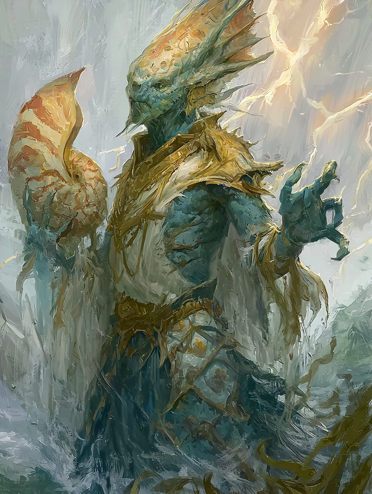

Navigator by faith, deceiver by circumstance, saint and sinner of the tides
He heard a voice in the shell. He never thought to ask whose.

Yanos Pelagos Benthos spent his life in service to the sea, believing every gift, every whispered word, every miracle that flowed through his hands was the blessing of Thassa — goddess of the wine-dark deep, she who steers the stars of sailors. He was a good priest by any measure: humble in his devotions, tireless in his service, content to guide merchant vessels through storms and see them safely home.
He never questioned the voice in the nautilus shell. It knew him by name. It spoke of the deep places. It told him what Thassa would want — and he did it. For years, this was sufficient.
The truth, which neither he nor his goddess ever fully articulated to him, is that the powers running through him were never entirely hers.
He helped ships. He also, on occasion, helped sink them — always with a reason he could justify, always when the voice suggested the time was right, always followed by a prayer to Thassa for the drowned souls. He never connected those two halves of himself.
The sea does not mourn what it takes. Neither should her servants. Yanos — spoken at a memorial for a crew he had guided to their deaths
Triton racial bonuses (+1 Str, +1 Con, +1 Cha) included. High Wisdom reflects genuine faith and attunement; high Charisma reflects the warlock's influence more than he knows.
| Hit Points | 74 (5d8 + 5d8 + 10 Con) |
| Armor Class | 15 (Shell-studded leather + Dex) / 17 with Shield of Faith |
| Proficiency Bonus | +3 |
| Saving Throws (prof.) | Wisdom +7, Charisma +6 |
| Passive Perception | 17 |
| Speed | 30 ft. / 30 ft. swim |
| Initiative | +2 |
Italic = proficient. Gold = expertise. Double expertise in Insight — he reads other souls with uncanny precision, even as he remains blind to his own patron.
| Slot Level | 3rd level |
| Slots per Short Rest | 2 |
| Spell Save DC | 14 (8 + prof + Cha) |
| Spell Attack | +6 |
Cleric spell slots: 4/3/2 (1st/2nd/3rd). Tempest domain spells always prepared.
3rd-level slots, 2×/short rest. All are tinted cold and lightless.
| Item | Notes |
|---|---|
| The Nautilus Shell | His holy symbol — and his Warlock spellcasting focus. He has carried it since adolescence. The voice within speaks rarely now; it no longer needs to. Faintly warm to the touch despite the cold power it channels. |
| Trident +1 | Blessed by the temple of Thassa at Meletis, its tines are carved with her wave-eye symbol. He wields it in melee when Eldritch Blasts would be disrespectful to the moment. |
| Shell-Studded Leather Armor | Crafted from deep-sea mollusc shells bound over cured hide. AC 13 + Dex. Each shell was donated by a sailor he helped cross safely. He knows their names. |
| Navigator's Charts | Two dozen hand-drawn. Covers the Siren Sea, the Laconian Gulf, and — added later in his own hand — preliminary sketches of the Astral Sea's currents, which he calls "the tides above." |
| Sailor's Pipe | Carved from driftwood. He smokes when he is thinking. He was thinking a great deal by the end of the campaign. |
| Offering Bowl | Shallow brass bowl, sea-stained. He fills it with seawater wherever he travels and prays at dawn. In the Astral Sea, he filled it with starlight-water drawn from the void-streams. He prayed over that too. |
| Letter of Introduction (Gith) | A document in the githyanki script — signed by the captain of the Veridian Spear, attesting that Yanos Pelagos Benthos is a Friend of the Silver Swords and may be welcomed aboard any gith vessel. He cannot read it. He keeps it folded next to his heart. |
Yanos stands just over six feet, broad across the chest and shoulders in the way of tritons who have spent decades swimming against current. His scales shift between deep teal and seafoam depending on the light — vivid in sunlight, nearly black in shadow. His crest fins are amber-gold at the edges, darkening to teal at the base. He moves with the unhurried deliberateness of someone who has spent his life managing the moods of sailors and storm fronts alike.
Warm, pastoral, and slightly formal in the way of priests who have dealt with frightened people for years. He speaks of the sea the way devoted people speak of family — with love that assumes no explanation is needed. He listens before he speaks. He is genuinely good company and genuinely dangerous, and both of these things are sincere.
Over his career, Yanos guided roughly forty merchant and fishing vessels safely across hazardous waters. He kept detailed records: the captain's name, the cargo, the storm conditions, the prayers he offered. He has these in a waterproofed journal. He can recount the details of most crossings from memory.
Three. He has records of these as well, in a separate section of the same journal, written in smaller script. He called them necessary sacrifices and offerings to the hungry sea. The voice in the shell was very clear each time. Slavers, once. A warship hunting innocents, once. The third he does not speak about.
The campaign's final chapter brought Yanos into contact with a githyanki crew whose astral vessel, the Veridian Spear, had been badly damaged in a rift-crossing. The gith had no knowledge of tidal mechanics; Yanos had no knowledge of astral-ship engineering. What they discovered together was that the two problems were, at a certain level of abstraction, the same problem.
He spent three weeks helping them repair the hull — sealing rift-breeches with the same techniques used to repair coral-grown triton vessels, using his Water Wall and Wall of Stone to temporarily displace the void-currents while the gith worked. When the Veridian Spear was spaceworthy, the captain offered him passage. He accepted.
I have spent my life carrying Thassa's bounty to sailors who cannot reach it themselves. If there are seas above, then there are sailors above who do not yet know her name. That is not a reason to stay. That is the reason to go. Yanos Pelagos Benthos — to the party, at departure
He departed with the githyanki into the Astral Sea. His charts — the ones depicting "the tides above" — were in his pack. His nautilus shell was warm against his chest. Somewhere in the void, something very old and very patient felt him move into its domain, and was pleased.
| Category | Description |
|---|---|
| Trait | Treats every crossing — whether of ocean or void — as a sacred responsibility. Lists the names of those in his care before setting out. Prays for fair passage before sleeping. |
| Trait | Deeply, quietly suspicious of gods who demand nothing. A deity that gives freely without cost is a deity concealing the cost. He learned this, and did not apply it to himself. |
| Ideal | The sea belongs to everyone. Its power is not meant to be hoarded by temples or navies or scholars. A good priest opens the water; he does not own it. |
| Bond | The forty sailors he brought safely home. He would cross any sea, any void, to protect one more. |
| Bond | The githyanki of the Veridian Spear, who trusted him with their ship when they had no reason to. He considers them crew now. |
| Flaw | He cannot tolerate not-knowing. If the shell speaks, he listens. If the dream recurs, it must be prophecy. If the power flows, it must be sanctioned. He has built an entire life on this assumption and has not once asked whether the assumption is earned. |
Yanos is not a villain. He is not even a compromised hero in the obvious sense. He is a genuinely faithful, genuinely good man whose faith has been parasitised so thoroughly that there is no clean seam between the genuine and the corrupted. His Tempest domain spells are Thassa's. His Fathomless features are not. He cannot feel the difference. That is the point.
If he were ever confronted with the truth, the primary wound would not be betrayal by an external force — it would be the realisation that he was the one who kept the deception alive by never asking.
He never experienced his ship-sinking as evil because the voice framed it as culling — removing vessels that would cause greater harm. He trusted that framing the way he trusted the tides. Confronted with the families of the third ship — the one he won't speak about — he would not have a satisfying answer. He never looked for one. Looking for answers was the thing he refused to do.
He was the most faithful man I ever sailed with. He prayed every dawn. He knew every sailor's name. He would have died for any one of us.
I still don't know what he was praying to. Unnamed fellow party member, post-campaign
Yanos is, by the campaign's end, genuinely happy. He has found a new frontier, new "sailors" to guide, a crew that respects him. The githyanki, who trust nothing that breathes water, trust him. He maps the void-currents with the same careful hand he used on the Laconian Gulf charts. He teaches the gith to read ocean weather the way they taught him to read rift-turbulence. He prays at dawn into his bowl of astral-water.
The nautilus shell still whispers sometimes. He listens. He always does.